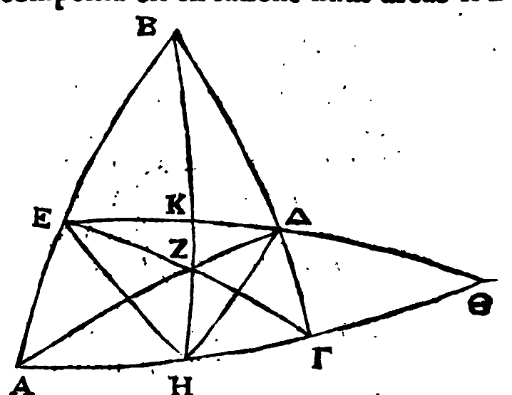

Proposition III.10 — De Concursu Perpendicularium (Latin)¶
Menelai Alexandrini Sphaericorum Lib. III Prop. X. Theor. (Halley 1758, pp. 95–97)
Prop. X. Theor. (Halley 1758, pp. 95–97)¶
Enuntiatio (Halley 1758, p. 95)
Si demittantur, de duobus quibuslibet angulis trianguli Sphaerici, ad latera iisdem opposita, duo arcus perpendiculares: erit arcus ab angulo reliquo ad punctum quo conveniunt priores illi arcus, si producatur, etiam normalis super latus reliquum.
[§4.4 · Demonstratio Integra, pp. 95–97] Sit ΑΒΓ triangulum Sphaericum, & de duobus punctis angularibus Α & Γ ducantur ad latera opposita ΒΓ, ΑΒ arcus normales ΑΔ, ΓΕ, qui conveniant in puncto Ζ, & ducta ΒΖ producatur ad occursum ipsius ΑΓ in puncto Η: dico arcum ΒΗ perpendicularem esse super arcum ΑΓ.
Transeat enim per puncta Δ, Ε arcus ΕΔ, qui producatur usque dum occurrat arcui ΑΓ producto: conveniant autem ad Θ, & jungantur duo arcus ΗΔ, ΗΕ. Jam quoniam habetur figura ΑΘΕΖ, ad modum Propositionis primae hujus, erit sinus arcus ΑΘ ad sinum arcus ΘΓ in ratione composita ex ratione sinus arcus ΑΔ ad sinum arcus ΔΖ & ratione sinus arcus ΖΕ ad sinum arcus ΕΓ. Pariterque in figura tali ΑΓΒΖ, ratio sinus arcus ΑΗ ad sinum arcus ΗΓ composita est ex ratione sinus arcus ΑΖ ad sinum arcus ΖΔ & ratione sinus arcus ΔΒ ad sinum arcus ΒΓ. Ratio autem sinus ΔΒ ad sinum ΒΓ, in figura ΑΒΓΖ, componitur ex ratione sinus ΔΑ ad sinum ΑΖ & ratione sinus ΖΕ ad sinum ΕΓ: ratio igitur sinus ΑΗ ad sinum arcus ΗΓ composita est ex tribus, nempe ex ratione sinus ΑΖ ad sinum ΖΔ, & ratione sinus ΔΑ ad sinum ΑΖ, & ratione sinus ΖΕ ad sinum ΕΓ: duae autem priores, ob utrinque inventum ΑΖ, componunt rationem sinus ΔΑ ad sinum ΖΔ: ratio igitur sinus ΑΗ ad sinum ΗΓ componitur ex ratione sinus ΔΑ ad sinum ΖΔ & ratione sinus ΖΕ ad sinum ΕΓ. Sed ratio sinus ΑΘ ad sinum ΘΓ componitur ex iisdem rationibus; quare sinus arcus ΑΘ est ad sinum arcus ΘΓ sicut sinus arcus ΑΗ ad sinum arcus ΗΓ.


Jam in triangulo ΑΔΓ angulus ΑΔΓ est rectus; quare (per octavam III hujus) angulus ΘΔΓ aequalis erit angulo ΓΔΗ, ac proinde angulus ΑΔΗ aequalis erit angulo ΑΔΕ: ac ob angulum ΓΕΑ rectum, erit quoque (per eandem octavam) angulus ΔΕΓ aequalis angulo ΓΕΗ. Quoniam vero ΔΕΗ triangulum est Sphaericum, ac dividuntur anguli ejus ad Δ & Ε bifariam à ductis arcubus ΔΖ, ΖΕ; si ducatur arcus ΗΖ è puncto Η ad concursum eorum in Ζ, erit quoque angulus ΕΗΔ bifariam divisus, per nonam III. hujus. In triangulis autem ΘΔΗ, ΘΕΗ anguli Δ & Ε divisi sunt bifariam ab arcubus ΔΓ, ΕΓ, quare (per 6m III. hujus) tam sinus arcus ΘΕ ad sinum ΕΗ, quam sinus arcus ΘΔ ad sinum arcus ΔΗ, erit in eadem ratione, nempe ut sinus arcus ΘΓ ad sinum arcus ΓΗ: permutando itaque sinus ΘΕ erit ad sinum ΘΔ sicut sinus ΕΗ ad sinum ΗΔ, hoc est ut sinus arcus ΕΚ ad sinum arcus ΚΔ, quia angulus ΕΗΔ bifariam divisus est arcu ΗΖΚ. Quocirca cum angulus ΕΗΚ aequalis est angulo ΔΗΚ, ac sinus arcus ΘΕ est ad sinum ΘΔ sicut sinus ΕΚ ad sinum ΚΔ, erit (è conversa 8vae III hujus) angulus ΘΗΚ rectus. Q. E. D.